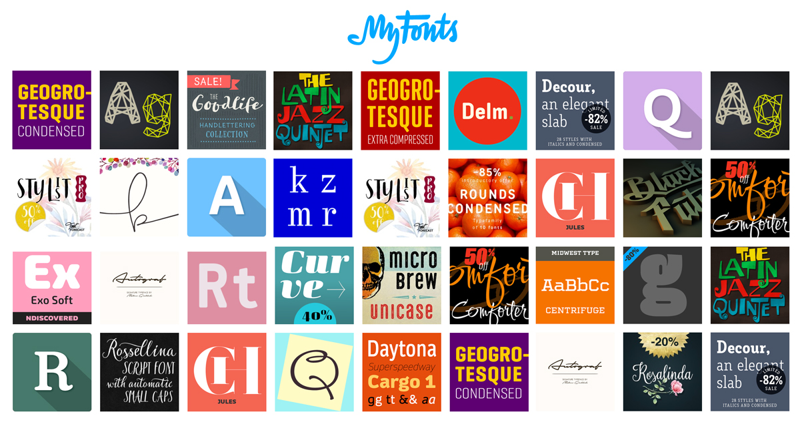

Advice on getting a logo
Jun 29, 2015

You have two options for a logo. You can either go get a cool font you like and just use that as a texted based logo. Something from a font studio like myfonts.com
Or you can go to the trouble of having someone design you a logo. If they are going to design, then it should have a more thorough approach of two concepts; a primary version and a secondary mark that would be a simpler (or more eloquent) view of your brand. The idea is consistency based on a variety of implementations. That logo should ultimately be presented on horizontal, square, and vertical formats in order to make sure all based are covered.
Also, I would have the designer provide a style guide based on my verbal descriptions of my logo to ensure we are on the same page. It's easier, faster, and cheaper to critique other logos than it is to design yours. Let the designer learn your opinions and tastes before they start.
Here's my idea of logo / branding deliverables if I were to hire someone
I. A logo in the following versions;
primary & secondary marks in;
-
- color on dark
-
- color on white
-
- black & white
II. a business card design.
I'd like to see my approved logo in 3 - 5 different color ways
III. Email signature design
I'd like to have 2 versions of an email signature. full and compact.
Hope that helps!